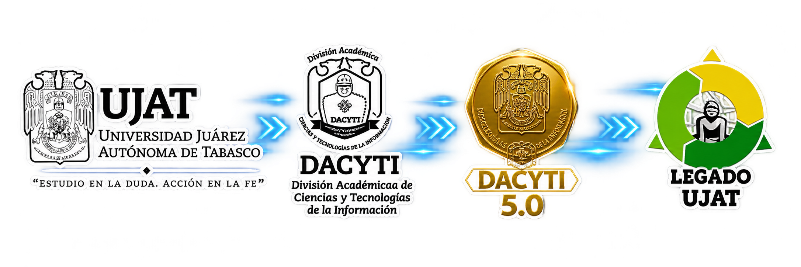
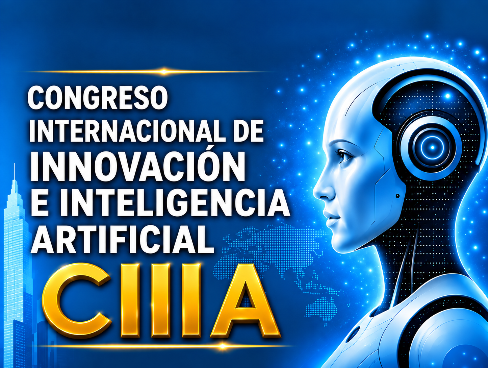

Reto IA: ¿cuánto sabes?
Responde cinco preguntas y descubre tu puntuación.


UJAT · DACYTI · 11—13 NOV 20261.er Congreso Internacional de Innovación e Inteligencia Artificial. Explora conferencias, talleres y actividades desde un solo lugar.
Filtra por día, tipo de actividad o busca por nombre y ponente.
0 actividades guardadas
Consulta el programa usando lenguaje natural. DACYTI 5.0 te ayuda a explorar horarios, talleres, ponentes y temas de inteligencia artificial. Puedes escribir o elegir una respuesta rápida.

Responde cinco preguntas y descubre tu puntuación.
Pista: escribe “activa el modo futuro” en el asistente.
11, 12 y 13 de noviembre de 2026
Teatro Universitario, CIVE y Dirección de Tecnologías de Información, según actividad.
Nota: el programa original indica dos talleres simultáneos en Sala de Capacitación 1 el 11 de noviembre. Confirma disponibilidad y sedes con los organizadores. Los enlaces de Meet no figuran en el documento.